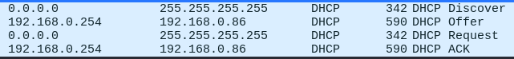
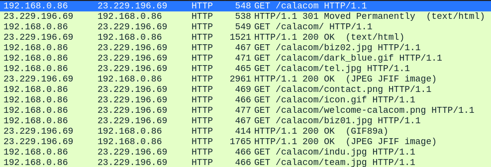
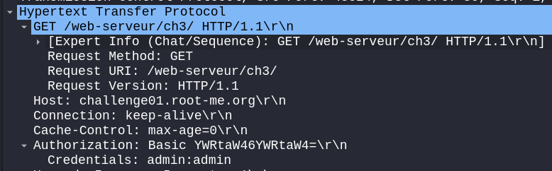
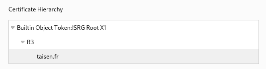

Analyse de la Sécurité du Trafic Réseau avec Wireshark
- Adresse IP : 192.168.0.86
- Classe IP : Classe C
- Masque de sous-réseau : 255.255.255.0
- Adresse de la passerelle : 192.168.0.254
Questions et Réponses
Quels sont les flags TCP ?
- URG: Urgent Pointer field significant
- ACK: Acknowledgment field significant
- PSH: Push Function
- RST: Reset the connection
- SYN: Synchronize sequence numbers
- FIN: No more data from sender
Capturer le processus DORA du protocole DHCP

Qu’est-ce que le DHCP Starvation / snooping ? Rogue DHCP ?
- DHCP Starvation: Attaque visant à épuiser les adresses IP disponibles en envoyant de multiples requêtes.
- DHCP Snooping: Technique de sécurité pour surveiller et filtrer les messages DHCP.
- Rogue DHCP: Un serveur DHCP non autorisé qui distribue des configurations réseau incorrectes.
Que se passe lors du « ipconfig /release » (Windows) ? D’un point de vue sécurité, quel peut être l'enjeu ?
- ipconfig /release libère l'adresse IP actuelle.
- Enjeu de sécurité : possibilité de déni de service ou de réaffectation d'une adresse IP. Possibilité qu'un serveur DHCP rogue récupère le client.
Quelle fonctionnalité propose CISCO pour se prémunir des attaques DHCP ?
- Cisco propose DHCP Snooping pour protéger contre les attaques DHCP.
Capturer une requête DNS et sa réponse

- DNS Spoofing: Manipulation des réponses DNS pour rediriger le trafic.
- Protection: Utilisation de DNSSEC (Domain Name System Security Extensions).
Qu’est-ce que DNSSEC ? DNS over TLS / HTTPS ?
- DNSSEC: Extensions de sécurité DNS pour assurer l'authenticité des réponses DNS.
- DNS over TLS: Chiffrement du trafic DNS via TLS.
- DNS over HTTPS: Chiffrement du trafic DNS via HTTPS.
Dans quels cas trouve-t-on du DNS sur TCP ?
- Lors de la transmission de données volumineuses dépassant les 512 octets ou lorsque les réponses sont fragmentées.
Capturer un flux HTTP

Qu’est-ce que le HTTP Smuggling ? Donner un exemple de CVE
- HTTP Smuggling: Manipulation des requêtes HTTP pour contourner les contrôles de sécurité.
- Exemple de CVE: CVE-2019-16278
- Utilisation de HTTPS avec des certificats TLS.
Qu’est-ce qu’une PKI ?
- PKI (Public Key Infrastructure) est un ensemble de procédures et technologies pour gérer les clés publiques et les certificats numériques.
Capturer un mot de passe HTTP ou FTP ou Telnet (mettre en place les services si nécessaire)

- Utilisation de protocoles sécurisés comme HTTPS, FTPS, ou SSH pour FTP et Telnet.
Capturer un handshake TLS

Qu’est-ce qu’une autorité de certification (AC) racine ? Qu'est-ce qu'une AC intermédiaire ?
- Une autorité de certification (AC) racine est une AC dont le certificat est autosigné.
- Une AC intermédiaire est une AC dont le certificat est signé par une AC racine ou une autre AC intermédiaire.
Connectez-vous sur https://taisen.fr et affichez la chaîne de confiance du certificat

Capturer une authentification Kerberos (mettre en place le service si nécessaire)

Capturer une authentification RDP (mettre en place le service si nécessaire)

Quelles sont les attaques connues sur NetLM ?
- Les attaques connues sur NetLM incluent le relay attack et le pass-the-hash attack.
Capturer une authentification WinRM (Vous pouvez utiliser EvilWinRM si nécessaire côté client.)

Capturer une authentification SSH ou SFTP (mettre en place le service si nécessaire)

Intercepter un fichier au travers du protocole SMB

- Utilisation de SMB3 avec chiffrement activé et configuration de l'authentification par Kerberos.
Bonus 1 : Déchiffrer le trafic TLS en important la clé privée du certificat dans Wireshark

Bonus 2 : Reconstituer un fichier qui a transité sur le réseau à l'aide de Wireshark